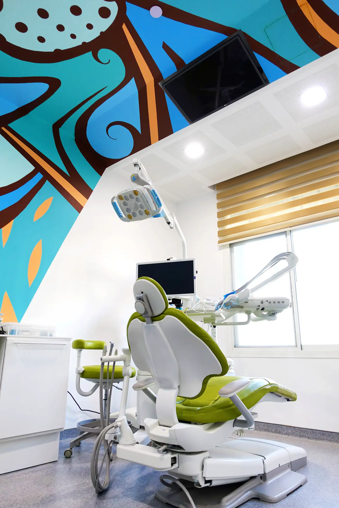

01
التقويم والإنفزلاين
تقويم الأسنان علمٌ يحرّك الأسنان إلى مكانها الصحيح ويوجّه نموّ الفك. لا يوجد حلّ سريع، فترتيب الأسنان يحتاج وقته. نوفّر كل الأنواع، من التقويم المعدني إلى التقويم الشفاف.
أنواع التقويم لدينا
- التقويم الشفاف من Invisalign
- تقويم لساني ثنائي وثلاثي الأبعاد
- تقويم معدني (ستانلس ستيل)
- تقويم ICE (معدن شفاف)
- تقنية Wilckodontic
- تقنية Sure Smile
- أجهزة Allesee التقويمية
يقوم به Dr. Fatima Hisham Al Rayyes، أخصائية تقويم الأسنان، وDr. Edgard Y. Zogheib، أخصائي التقويم والتقويم الشفاف.
